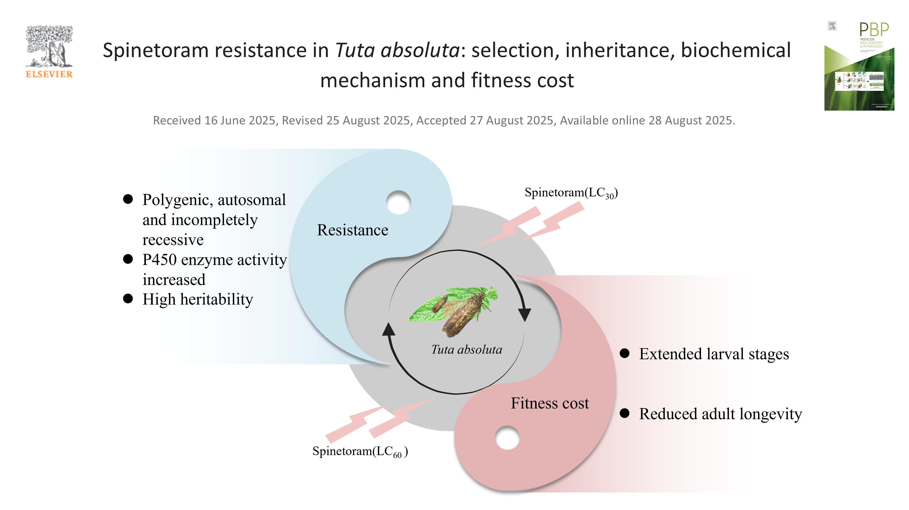

Hello! My name is Ziyan Zhuang, and I am currently an undergraduate student at the College of Life Science and Technology, Xinjiang University. I am passionate about biological sciences and look forward to making meaningful contributions in my field.
News

Aug 28, 2025
Spinetoram resistance in Tuta absoluta
Congratulations to Xie and team! 410-fold resistance after 20 generations. Read
My research is driven by a fundamental curiosity about how we can move beyond traditional, empirical methods to design complex systems—be it a novel protein or a truly adaptive AI. My goal is to leverage computational methods to develop frameworks that are not only effective but also grounded in first principles, whether they are the laws of physics and chemistry or the evolutionary principles governing biological intelligence.
Direction 1: MCMC and PINNs for De Novo Protein Design
The first direction of my research focuses on developing predictive and robust methodologies for de novo protein design from a computational chemistry perspective. I believe that by integrating statistical mechanics and deep learning, we can overcome the limitations of traditional molecular dynamics and empirical design.
I am particularly interested in two synergistic approaches:
Markov Chain Monte Carlo (MCMC) Framework: This approach efficiently samples the vast conformational space of proteins by defining the design space with physically and chemically meaningful moves. The acceptance of these moves will be guided by a scoring function that combines established force fields with statistical potentials derived from known protein structures.
Physics-Informed Neural Networks (PINNs): While deep learning models like AlphaFold are powerful, they can sometimes produce physically unrealistic structures. My approach augments the neural network's loss function with terms that enforce fundamental physical constraints, ensuring generated protein structures are both plausible and physically stable.
Direction 2: An Evolving Agent Framework for Continuous Learning
My second research direction is inspired by a critical observation: current Agent frameworks, despite their potential, are inherently limited by the static, "train-and-predict" paradigm of their underlying Large Language Models (LLMs).
I propose to develop:
A novel Agent architecture that integrates principles of biological intelligence, creating a dynamic system that continuously learns and adapts.
A cyclical learning mechanism, analogous to the human sleep-wake cycle, for daily information integration and consolidation.
An evolutionary selection mechanism to refine the architecture, mimicking natural selection to enhance the system's overall performance.
Research Vision
My ultimate goal is to bridge the gap between computational design and biological systems, creating frameworks that can truly evolve and adapt. Whether designing novel proteins or developing intelligent systems, I aim to ground my work in fundamental principles while pushing the boundaries of what's possible.
Publications
5) Xie JG1, Turak R1, Liu N, Zhuang ZY, Liu XN, Song Y. 2025. Spinetoram resistance in Tuta absoluta: selection, inheritance, biochemical mechanism and fitness cost. Pesticide Biochemistry and Physiology. Read the paper → JCR Q1
4) Zhang LJ1, Zhuang ZY1, Xie JG1, Kong WT, Li TT, Wang SF, Liu XN. 2025. Molecular insights on the function of CYP380C12 in Aphis gossypii Glover (Hemiptera: Aphididae): in silico and RNAi analyses. Journal of Economic Entomology. https://doi.org/10.1093/jee/toaf067 JCR Q1
3) Li Y1, Kong WT1, Li TT1, Zhang LJ, Zhuang ZY, Liu N, Liu XN. 2025. Functional analysis of lactase phlorizin hydrolase in insect-plant coevolution based on deglycosylation. Journal of Agricultural and Food Chemistry. https://doi.org/10.1021/acs.jafc.4c12035 JCR Q1
2) Xie JG1, Wang SY1, Zhuang ZY, Wang XH, Lin MH, Liu XN. 2025. Exploring the role of CYP6AB328 in spinetoram resistance and growth and development of Phthorimaea absoluta. Pesticide Biochemistry and Physiology. https://doi.org/10.1016/j.pestbp.2025.106316 JCR Q1
1) Xie JG1, Ali A1, Li Y, Zhuang ZY, Liu XN. 2024. Functional Investigation of CYP304F1 in Tuta absoluta (Lepidopteran: Gelechiidae) by RNA Interference. Journal of Economic Entomology. https://doi.org/10.1093/jee/toae283 JCR Q1
1 Co-first author
CV Highlights
Education
B. Sc Biological Science | Xinjiang University 2022-2026 Achieved good grades in university mathematics and physics courses, and performed well in core subjects.
Joint Minor in Climate Change and Carbon Neutrality | Tongji University & Xinjiang University 2023-2024 | Received completion certificate | This program broadened my academic vision.
Honors and Awards
August 2024: Second Prize (1/5) | In China Undergraduate Life Sciences Contest (CULSC)
August 2024: Outstanding Newcomer Award | In The Chinese Society of Biochemistry and Molecular Biology (Branched of Agricultural)
Research & Professional Experience
Summer School July 2024 | Peking University | Center for Life Science (CLS) | Center for Quantitative Biology (CQB) Topic: Quantitative Biology
Internship July 2024 | Xinjiang University | Chemical Engineering Institute Topic: Biomass pyrogenation; Microwave-assisted pyrolysis of CH4 catalyzed by carbon materials
Research Experience in Prof. Xiaoning Liu's Lab 2023-Present | Xinjiang University | College of Life Science and Technology Research Focus: Pest Control, Cytochrome P450, Insecticide Resistance.
Projects & Software
BOGDA - A Deep Learning Framework for Pest Resistance Prediction
Dry Lab Skills
Proficient in computational techniques for molecular biology and bioinformatics. Expertise includes:
Molecular Docking: Utilizing tools such as Vina, ADFR, and LeDock to investigate ligand-protein interactions and characterize binding conformations of agrochemicals and proteins.
Molecular Dynamics (MD) Simulations: Experienced in all-atom MD simulations using GROMACS and AMBER for analyzing conformational dynamics.
Integrated Bioinformatics & Structural Modeling: Developing computational pipelines for analyzing gene expression (RNA-Seq), evolutionary analysis, AI-based structural modeling (AlphaFold, Protenix), traditional modeling (I-TASSER, Swiss-model), and structural analysis (Pymol, Discovery Studio, ChimeraX, Jmol, VMD, Mol*, Mole 2). Functional annotation using InterPro, UniProt, etc.
Data Science & Quantitative Analysis & AI for Science: Building mathematical models, processing experimental datasets with statistical validation, statistical analysis (hypothesis testing, regression modeling), advanced visualization (Python, MATLAB, R, Prism), and data wrangling. Developed BOGDA, a Deep Learning Framework for Pest Resistance Prediction.
Wet Lab Skills
Mastery of fundamental molecular biology and biochemistry experimental techniques:
Functional Characterization of Genes: Via gene cloning, expression, and functional analysis using RNAi. Includes techniques such as nucleic acid extraction, PCR, reverse transcription, electrophoresis, and dsRNA synthesis.
Protein Analysis: Including protein extraction and SDS-PAGE.
Outside of academics and research, I enjoy relaxing and enriching myself through various hobbies:
Programming interesting projects
Rock climbing
Fishing
Rock music, Jazz Hip Hop, Country music
Reading
Favorite Bands / Songs
Photo
Field Work in Northern Tianshan Mountains
In June 2024, We participated in a field research expedition to the Northern Tianshan Mountains. During our wildlife monitoring program, we were fortunate enough to capture footage of the majestic Tianshan wapiti (Cervus elaphus songaricus) through our infrared cameras.
The Tianshan wapiti is a subspecies of red deer endemic to the Tianshan Mountain range in Xinjiang Uygur Autonomous Region, China. Listed as a Class II nationally protected species, its wild population has dwindled to fewer than 10,000 individuals, primarily distributed in the remote montane forests of the northern Tianshan Mountains.
Infrared-triggered Camera
An observation of the Tianshan Wapiti in its natural habitat
Video footage of Tianshan Wapiti from our monitoring program